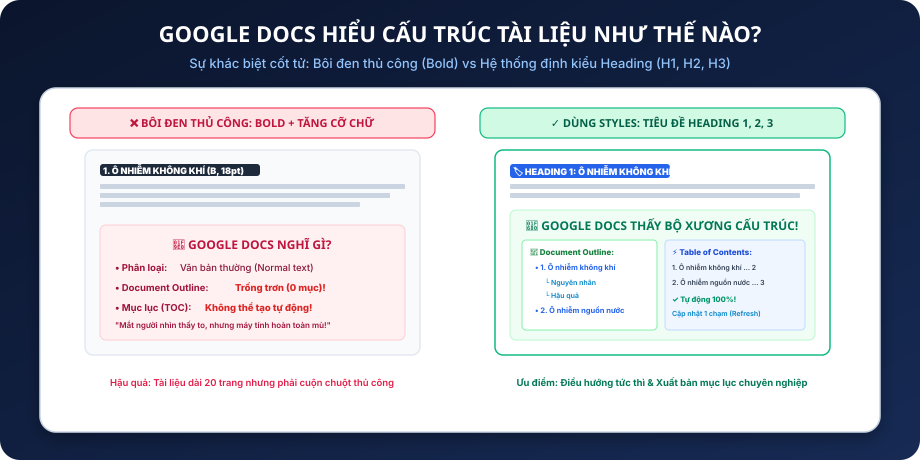
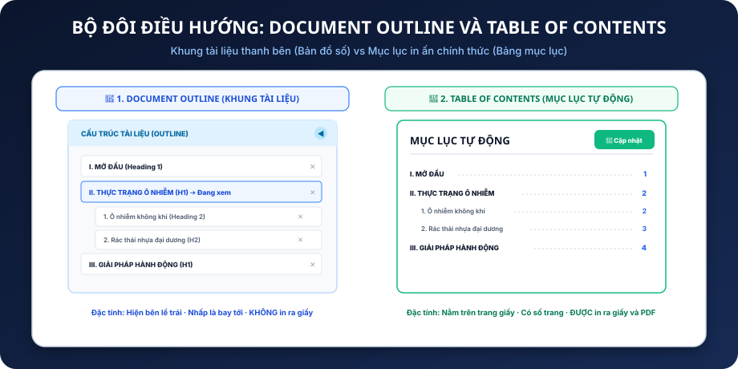
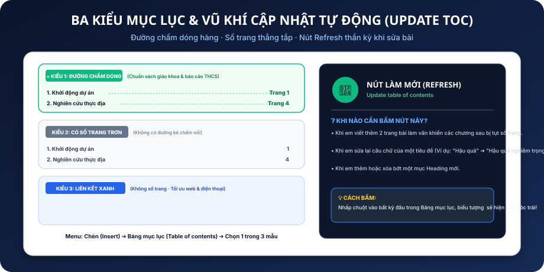
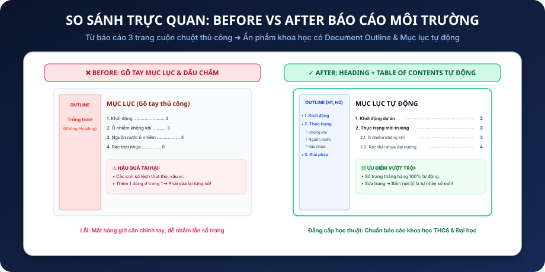

Tạm biệt thói quen cuộn chuột tìm bài và gõ dấu chấm ...... thủ công! Làm chủ Bản đồ số Document Outline và xuất bản Bảng mục lục tự động (Table of Contents) chuẩn chỉ từng số trang chỉ trong 3 giây.
Google Docs hiểu cấu trúc qua Heading 1, 2, 3 chứ không phải Bold.
Bản đồ số thanh bên trái: nhấp chuột là bay ngay đến mục cần đọc.
Tự động lấy tiêu đề và số trang, đường chấm dóng hàng thẳng tắp.
Viết thêm bài hoặc sửa tiêu đề? Bấm 1 nút là đồng bộ số trang mới!
Sau bài học này, em sẽ tự tin xử lý bất kỳ báo cáo khoa học dài 10–50 trang nào:
Phân biệt rạch ròi giữa việc bôi đen thủ công (Bold/Size) và việc gắn nhãn ngữ nghĩa (Semantic Styles: Title, Heading 1, 2, 3).
Bật/tắt thanh Document Outline bên trái màn hình, sử dụng nó như bản đồ số để chuyển trang tức thì và quản lý danh mục.
Chèn mục lục trang trọng (có đường chấm nối, có số trang hoặc link xanh cho web) chỉ trong 3 giây.
Bấm nút Refresh 🔄 để cập nhật toàn bộ mục lục khi thêm trang, và hoàn thành Báo cáo Môi trường 2–3 trang có cấu trúc mẫu mực.
Quan sát hai tình huống dở khóc dở cười mà rất nhiều bạn học sinh THCS gặp phải:
Bài báo cáo khoa học dài 15 trang. Muốn tìm đến mục "3. Giải pháp giảm rác thải nhựa", học sinh phải lăn chuột từ trang 1 qua trang 2, 3, 4... hoa cả mắt và cực kỳ tốn thời gian.
Học sinh tự tạo trang mục lục bằng cách gõ:
I. Mở đầu ....................... 2
II. Thực trạng ................... 3
Kết quả: Các con số thụt thò lồi lõm. Và khi chèn thêm 1 tấm ảnh, toàn bộ số trang phía sau sai bét, phải ngồi gõ sửa lại từng số một!
Hiểu sự khác biệt bản chất giữa trang trí mắt nhìn và cấu trúc ngữ nghĩa cho máy tính:

Một tài liệu khoa học luôn được tổ chức theo các tầng nấc logic chặt chẽ:
Dành cho các Chương lớn / Phần lớn của báo cáo.
Ví dụ: I. MỞ ĐẦU, II. NỘI DUNG NGHIÊN CỨU, III. KẾT LUẬN.
Dành cho các Mục con nằm bên trong Heading 1.
Ví dụ: 1. Ô nhiễm không khí, 2. Ô nhiễm nguồn nước.
Dành cho các Ý chi tiết nhỏ bên trong Heading 2.
Ví dụ: a) Khí thải xe máy, b) Khói bụi nhà máy.
Document Outline là thanh bên thông minh hiển thị toàn bộ cây tiêu đề tài liệu:
(Tiếng Anh: View ➔ Show document outline).
Hoặc nhấp vào biểu tượng danh sách nhỏ có mũi tên 📑 ở sát mép trên cùng bên trái của trang soạn thảo!
Vừa gõ bài, em vừa liếc mắt sang trái để kiểm tra xem bài viết của mình đã đủ ý chưa, các mục có bị lặp lại hoặc đặt sai cấp độ hay không.
Bạn Minh nộp tài liệu nhưng phàn nàn rằng: "Thanh Document Outline của tớ trống trơn không có gì!". Em hãy chuẩn đoán nguyên nhân:
Cùng hỗ trợ điều hướng nhưng hai công cụ này phục vụ hai mục đích hoàn toàn khác biệt:

Sau khi văn bản đã được gán Heading đầy đủ, tạo mục lục chỉ mất 2 bước cực nhanh:
Thông thường trong sách và báo cáo học đường, mục lục luôn nằm ở Trang 2 (ngay sau Trang Bìa và trước Nội dung mở đầu).
Trên thanh menu bấm: Chèn (Insert) ➔ Bảng mục lục. Google Docs sẽ mở ra menu chọn 1 trong 3 kiểu hiển thị.
Tìm hiểu các phong cách mục lục khác nhau và cách kích hoạt nút làm mới:

Khi em viết thêm 3 trang bài hoặc sửa tên một chương, điều gì sẽ xảy ra?
Nhấp chuột trái vào bất kỳ vị trí nào trong Bảng mục lục, một vòng tròn mũi tên xoay 🔄 sẽ xuất hiện ở góc trên bên trái của bảng.
Chỉ cần nhấp vào nút đó, Google Docs sẽ tự động quét lại toàn bộ tài liệu:
• Cập nhật các câu chữ tiêu đề mới sửa.
• Tự động nhảy lại số trang chính xác 100%.
• Bổ sung các Heading mới chèn thêm!
Trước khi bấm In ra giấy hoặc Tải xuống file PDF để nộp bài, luôn luôn làm một việc cuối cùng: BẤM NÚT CẬP NHẬT MỤC LỤC 🔄!
Em hoàn toàn có quyền kiểm soát những cấp độ Heading nào được phép xuất hiện:
Nếu bài viết có quá nhiều mục nhỏ, em có thể chọn chỉ hiển thị đến Heading 2 và ẩn Heading 3 để mục lục gọn gàng, thoáng mắt.
Tùy chỉnh khoảng cách thụt đầu dòng của Heading 2 và Heading 3 so với Heading 1 cha để tạo cấu trúc bậc thang đẹp mắt.
Lựa chọn giữa dấu chấm tròn, đường gạch ngang nét đứt hoặc ẩn hoàn toàn đường dóng tùy theo phong cách tài liệu.
Một tài liệu chuyên nghiệp cần có vị trí phân bổ trang mục lục rõ ràng:
Tên đề tài báo cáo, tên học sinh, lớp, năm học, ảnh minh họa lớn.
Đứng độc lập 1 trang riêng! Sau mục lục, nhấn ngay Ctrl + Enter để sang trang 3.
Bắt đầu với I. MỞ ĐẦU và các chương nội dung nghiên cứu.
Hãy ghi nhớ để không bị trừ điểm oan uổng trong bài kiểm tra:
Title chỉ dùng 1 lần duy nhất cho Tên bài báo cáo ở trang bìa. Đừng đặt Title cho các chương bên trong, vì mặc định Title sẽ không hiện trên Mục lục!
Nhiều bạn gõ trực tiếp chữ vào Bảng mục lục. Khi bấm nút 🔄 Cập nhật, toàn bộ chữ gõ thêm sẽ bị xóa sạch! Muốn sửa mục nào, hãy sửa ngay tại dòng Heading trong bài viết.
Không dùng ngắt trang (Ctrl + Enter), khiến mục lục và phần Mở đầu dính chung vào 1 trang, trông rất thiếu chuyên nghiệp.
Sửa bài xong vội vàng in ngay mà quên bấm nút 🔄 khiến số trang trên mục lục bị lệch so với bài in thực tế.
Không cần mở chuột bấm chọn menu Styles, hãy dùng 3 tổ hợp phím này:
Chuyển ngay dòng hiện tại thành Tiêu đề cấp 1.
Chuyển ngay dòng hiện tại thành Tiêu đề cấp 2 con.
Xóa kiểu Heading và quay về văn bản thường.
Thử thêm mục mới, thay đổi nội dung trang và bấm nút 🔄 Cập nhật để trải nghiệm sự thần kỳ:
Em cần trình bày 3 mục sau trong báo cáo. Đâu là cách gán Heading chuẩn xác nhất?
Bạn Hoàng vừa hoàn thành báo cáo nhưng mắc 3 lỗi sai nghiêm trọng về mục lục:
Hoàng gõ phím dấu chấm liên tục để dóng hàng số trang thay vì dùng Table of Contents tự động.
Hoàng chèn thêm biểu đồ làm bài dài thêm 2 trang nhưng không bấm nút 🔄 Update TOC.
Không ngắt trang bằng Ctrl + Enter khiến mục lục dính sát vào tên đề tài ở trang bìa.
Cùng chiêm ngưỡng sự chuyển mình từ một tài liệu thô thành báo cáo chuẩn mực:

Em đóng vai trò Nhà nghiên cứu môi trường học đường, soạn thảo báo cáo hoàn chỉnh:
1. File PDF xuất bản: Kiểm tra độ thẳng hàng của số trang trên mục lục.
2. Link Google Docs: Để giáo viên kiểm tra trực tiếp Document Outline bên trái!
Tự tay tạo một tài liệu nghiên cứu 2–3 trang về môn thể thao em đam mê (Bóng đá, Cầu lông, Bơi lội...):
1. Giới thiệu · 2. Luật chơi · 3. Dụng cụ · 4. Lợi ích sức khỏe · 5. Kết luận.
Chèn Table of Contents tự động ở trang 2 và kiểm tra Document Outline hoạt động.
Chèn ít nhất 2 hình ảnh minh họa dụng cụ thi đấu hoặc sân tập chuẩn.
Chúc mừng em đã hoàn thành xuất sắc Chặng 2 về Trình Bày Chuyên Nghiệp! Ghi nhớ các thói quen vàng:
| Ctrl + Alt + 1 | Gán Heading 1 cho chương lớn |
| Ctrl + Alt + 2 | Gán Heading 2 cho mục con |
| Ctrl + Alt + 0 | Trả về văn bản thường (Normal text) |
| Ctrl + Enter | Ngắt trang riêng cho Mục lục |
Nhấp chuột trực tiếp vào bất kỳ thẻ trạm nào trên không gian 3D để phi thuyền camera phóng to vào trạm đó!
• 15 phút: Tình huống cuộn chuột mỏi tay & Giải phẫu tư duy Heading.
• 20 phút: Document Outline bên trái & Bí kíp nhảy trang 1-chạm.
• 20 phút: Chèn Table of Contents, 3 kiểu dáng & Nút Refresh 🔄.
• 30 phút: Thực hành tổng hợp Báo cáo Bảo vệ Môi trường 30đ.
• 15 phút: Quiz 10 câu & Giao nhiệm vụ về nhà.
"Tại sao khi em bôi đen chữ rồi bấm phím In đậm (Bold), mắt em thấy chữ to nhưng thanh Document Outline bên trái vẫn trống trơn?"
Học sinh thường hay tự gõ chữ vào trong khung Bảng mục lục rồi ngạc nhiên khi bấm nút Refresh 🔄 chữ bị mất. Hãy giải thích rõ: Mục lục chỉ là gương phản chiếu của Heading trong bài!
| Space / → | Chuyển sang trạm tiếp theo |
| ← | Lùi về trạm trước đó |
| O | Xem sơ đồ không gian 3D (Overview) |
| Escape | Đóng phóng to hình ảnh hoặc đóng cửa sổ trợ giúp |
| ? | Bật/tắt hộp thoại trợ giúp này |